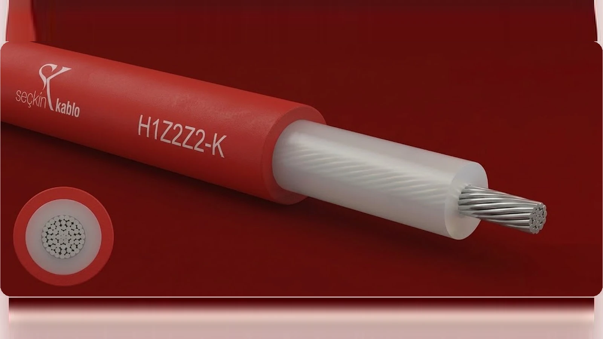

Solar Kabloları
Fotovoltaik (PV) sistemler için 1,5 kV DC tek damarlı güneş enerjisi kablosu. Kalaylı bakır iletken, çapraz bağlı halojensiz XLPO yalıtım ve kılıf; UV, ozon ve hava koşullarına 25 yıl dayanıklı, EN 50618 sertifikalı.

H1Z2Z2-K
Fotovoltaik sistemler için 1,5 kV DC tek damarlı güneş enerjisi kablosu; kalaylı bakır iletken, çapraz bağlı halojensiz yalıtım ve kılıf.
| İç iletken | Kalaylı bakır, çok telli esnek (EN 60228 Sınıf 5) |
|---|---|
| İzolasyon | Çapraz bağlı halojensiz elastomer (XLPO) |
| Dış kılıf | Çapraz bağlı halojensiz elastomer (XLPO) — RAL 3000 kırmızı / siyah |
| Nominal gerilim | 1,5 kV DC (damar-toprak, ekranlanmamış) |
| Test gerilimi | 6,5 kV DC / 5 min |
| Çalışma sıcaklığı | −40 °C … +90 °C (iletken max. +120 °C) |
| Ömür | 25 yıl (+90 °C) · 20.000 saat (+120 °C) |
| Bükülme çapı | 4 × kablo çapı |
| Dayanım | UV, ozon, hava koşulları ve alev yayılımına dayanıklı; halojensiz |
| Standartlar | EN 50618 · IEC 62930 · TS EN 50618 |
| Kesit (n×mm²) | Kablo çapı (mm Ø) | Bakır ağırlık (kg/km) | Toplam ağırlık (kg/km) |
|---|---|---|---|
| 1 × 1,5 | 4,7 | 15 | 32 |
| 1 × 2,5 | 5,2 | 25 | 44 |
| 1 × 4,0 | 5,7 | 39 | 60 |
| 1 × 6,0 | 6,3 | 58 | 83 |
| 1 × 10,0 | 7,6 | 97 | 132 |
Kullanım: güneş enerjisi santralleri, çatı ve saha PV sistemleri, string ve DC ana toplayıcı hatları.
Sık Sorulan Sorular — Solar Kabloları
Solar kabloyu normal enerji kablosundan ne ayırıyor?
Solar kablo (H1Z2Z2-K) DC uygulamalar için tasarlanmıştır; UV, ozon, yüksek sıcaklık ve hava koşullarına 25 yıl dayanıklıdır. Standart PVC kabloların ömrü dış ortamda çok daha kısadır.
1,5 kV DC gerilim ne anlama geliyor?
Modern PV sistemler daha az kayıp için 1500 V DC dizilerle çalışır; H1Z2Z2-K bu gerilim seviyesi için 6,5 kV DC test gerilimi ile onaylıdır.
Kablonun rengi seçenekleri var mı?
Kırmızı (+ artı kutup) ve siyah (- eksi kutup) olarak iki renkte üretilir; kurulumda kutup ayrımı için standart uygulamadır.
Hangi sertifikaları taşır?
EN 50618, IEC 62930 ve TS EN 50618 uyumludur; halojensiz ve alev yayılımına dayanıklıdır.